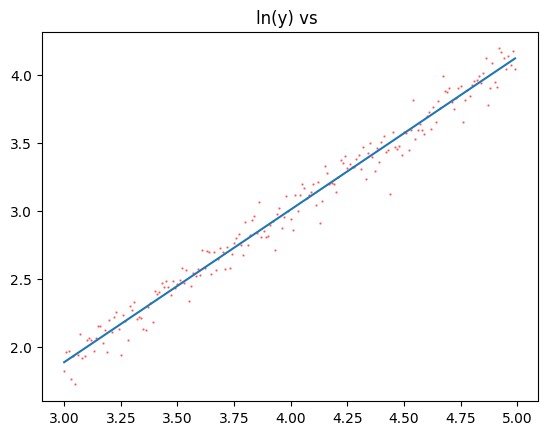

14. Log-Log Regression¶
Linear Regression is quite capable of solving non-linear problems if you know how to properly pre-process your data. Let’s look at a few types of datasets we can regress by using logarithmic transformations.
14.1. Regular Linear Regression¶
import numpy as np
import matplotlib.pyplot as plt
First let’s analyze a typical linear dataset
x = np.arange(-10,10,0.1)
y = 3*x + 5 + np.random.normal(0,10,len(x))
m,b = np.polyfit(x,y,1)
y_fit = np.poly1d((m,b))(x)
plt.scatter(x,y, color="red", alpha=0.5, s=0.5)
plt.plot(x,y_fit); # note the semicolon here. what does it do?
plt.title("Linear y vs x");
And find \(r\) and \(m\)
print(m)
np.corrcoef(x,y)
2.883664909519487
array([[1. , 0.86851604],
[0.86851604, 1. ]])
14.2. Exponential Regression¶
If we believe \(y = Ca^x\) then by regressing \(x\) against \(\ln y\) we can determine \(a\).
\[\begin{split}
\begin{array}{rl}
y &=& Ca^x \\
\ln y &=& \ln C + x \ln a \\
\end{array}
\end{split}\]
This is a line with slope \(\ln a\) and intercept \(\ln C\)
x = np.arange(3,5,0.01)
y = 0.25*3**x
# add noise, but keep y > 0
for i in range(len(y)):
while True:
noise = random.gauss(0,y[i]/10)
if (y[i]+noise > 0):
break
y[i] += noise
plt.scatter(x,y,s=0.5);
plt.title("Exponential correlation");
---------------------------------------------------------------------------
NameError Traceback (most recent call last)
Cell In[4], line 7
5 for i in range(len(y)):
6 while True:
----> 7 noise = random.gauss(0,y[i]/10)
8 if (y[i]+noise > 0):
9 break
NameError: name 'random' is not defined
# transform y
y_t = np.log(y) ## this is ln
m,b = np.polyfit(x,y_t,1)
y_fit = np.poly1d((m,b))(x)
plt.scatter(x,y_t, color="red", alpha=0.5, s=0.5)
plt.plot(x,y_fit);
plt.title("ln(y) vs ");

And find \(r\) and \(a\) and \(C\)
print("base = " , np.exp(m))
print("C = ", np.exp(b))
print(f"r = {np.corrcoef(x,y)[1,0]}")
base = 2.9975765382313955
C = 0.24812105741218246
r = 0.95069612414204
14.3. Log-Log Regression¶
If we believe \(y = Cx^k\) then by regressing \(\ln x\) against \(\ln y\) we can determine \(k\).
\[\begin{split}
\begin{array}{rl}
y &=& Cx^k \\
\ln y &=& \ln C + k \ln x \\
\end{array}
\end{split}\]
This is a line with slope \(k\) and intercept \(\ln C\)
import random
x = np.arange(2,10,0.01)
y = 10*x**3.14
for i in range(len(y)):
while True:
noise = random.gauss(0,y[i]/10)
if (y[i]+noise > 0):
break
y[i] += noise
plt.scatter(x,y,s=0.5);
plt.title("Polynomial correlation");

# check y for 0
print(np.min(y))
# transform y and x
x_t = np.log(x)
y_t = np.log(y)
m,b = np.polyfit(x_t,y_t,1)
y_fit = np.poly1d((m,b))(x_t)
plt.scatter(x_t,y_t, color="red", alpha=0.5, s=0.5)
plt.plot(x_t,y_fit);
plt.title("ln(y) vs ln(x)");
73.2177132494846

And find \(r\) and \(a\) and \(C\)
print("degree = " , m)
print("C = ", np.exp(b))
print(f"r = {np.corrcoef(x,y)[1,0]}")
degree = 3.133547086987462
C = 10.03662528625072
r = 0.9376281240390777